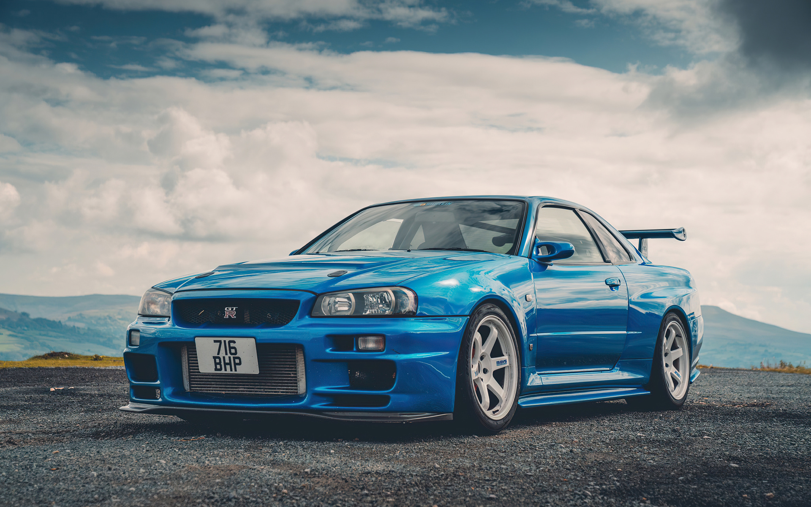
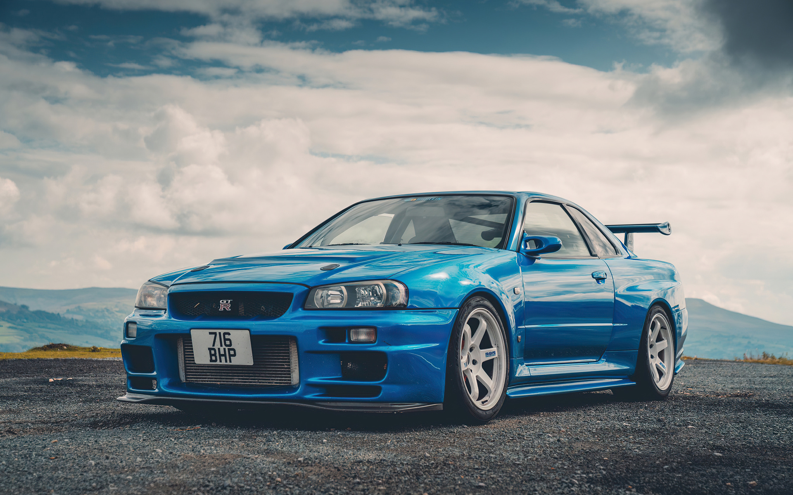
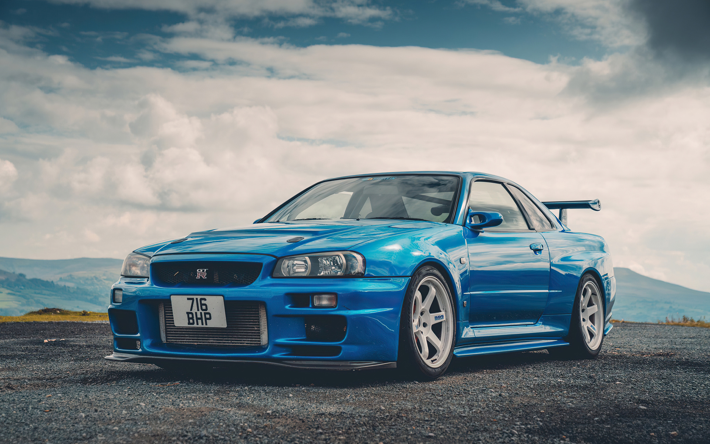

สวัสดีครับ ผมชื่อนายธนวิชญ์ สำเริง ชื่อเล่น มีน ปัจจุบันกำลังศึกษาอยู่ที่มหาวิทยาลัยราชภัฏเทพสตรี ลพบุรี
สาขาวิชาวิทยาการคอมพิวเตอร์ คณะเทคโนโลยีสารสนเทศ ชั้นปีที่ 3
ผมเป็นคนที่ชอบรถยนต์ โดยเฉพาะรุ่น Porche GT3RS เวลาว่างก็จะดูหนัง ฟังเพลง หรือเล่นเกมเพื่อผ่อนคลาย
อีกทั้งยังมีความสนใจด้านการเขียนโค้ด แม้ตอนแรกจะยังไม่มีพื้นฐานมากนัก แต่ก็เลือกเรียนสาขานี้เพราะอยากพัฒนาทักษะให้มากขึ้น
ในอนาคตตั้งใจว่าจะทำงานในสายโปรแกรมเมอร์ หรือนักพัฒนาโปรแกรม เพื่อสร้างผลงานที่มีประโยชน์และพัฒนาตัวเองให้เก่งขึ้นครับ
นอกจากนี้ ผมยังชอบศึกษาหาความรู้เพิ่มเติมนอกห้องเรียน ไม่ว่าจะเป็นการดูคลิปสอนเขียนโปรแกรม การเรียนออนไลน์ หรือการลองทำโปรเจ็กต์เล็ก ๆ เพื่อฝึกทักษะด้วยตัวเอง เพราะเชื่อว่าการพัฒนาในสายไอทีต้องอาศัยความเข้าใจจากการลงมือทำจริงอยู่เสมอ
ผมมองว่าการเขียนโปรแกรมไม่ใช่แค่สร้างคำสั่งให้คอมพิวเตอร์ทำงาน แต่เป็นการแก้ปัญหาให้กับผู้คนรอบตัว การได้เห็นสิ่งที่ตัวเองสร้างขึ้นใช้งานได้จริง เป็นความรู้สึกที่ทำให้มีกำลังใจอยากพัฒนาต่อไปอีก
ในอนาคตผมอยากลองทำงานด้านพัฒนาเว็บแอปพลิเคชันหรือโมบายแอป เพราะรู้สึกว่าเป็นงานที่ได้ใช้ความคิดสร้างสรรค์และมีความท้าทายอยู่เสมอ และก็ยังอยากเรียนรู้เรื่องระบบคลาวด์กับ AI เพิ่มเติม เพื่อนำมาประยุกต์ใช้ในงานต่าง ๆ ให้มีประสิทธิภาพมากที่สุดครับ
